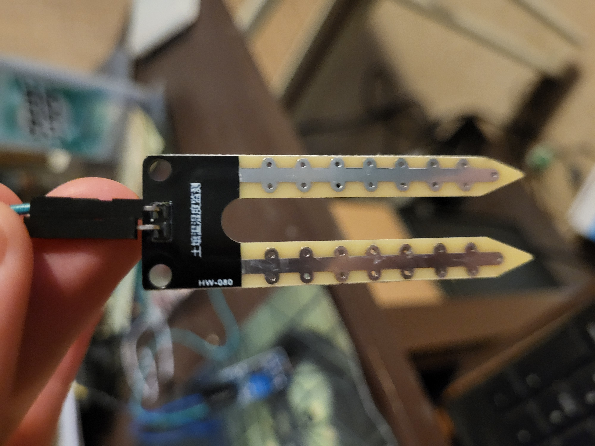
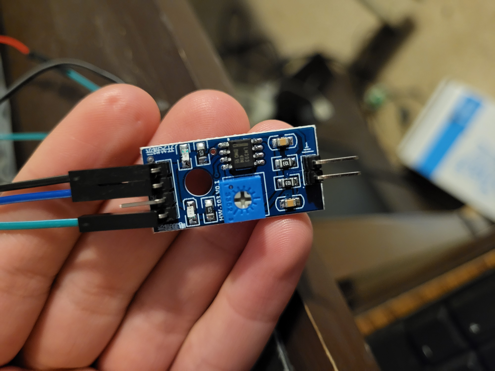
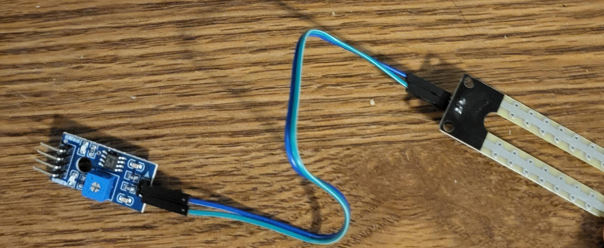
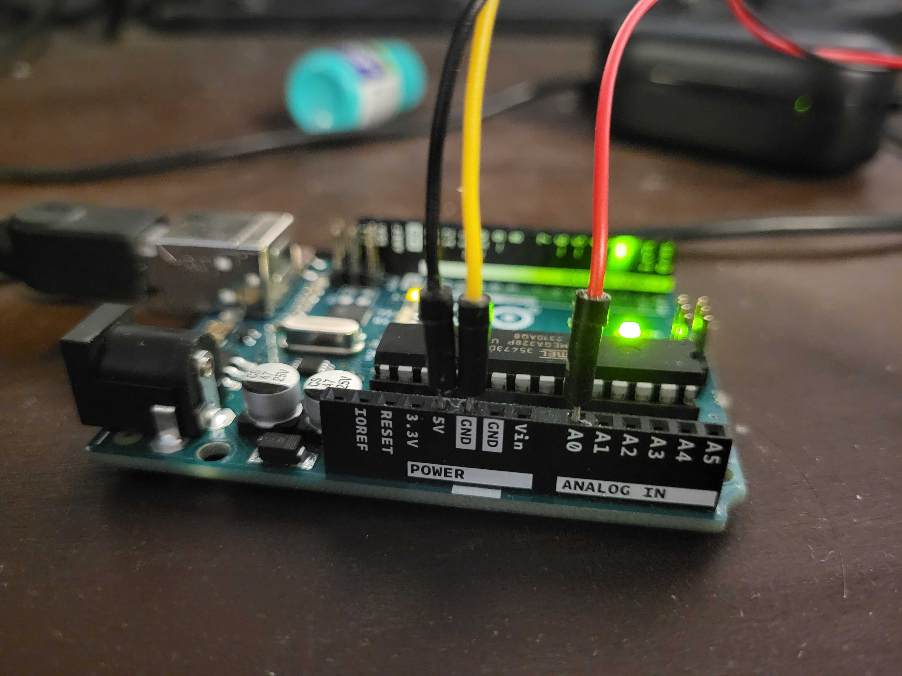
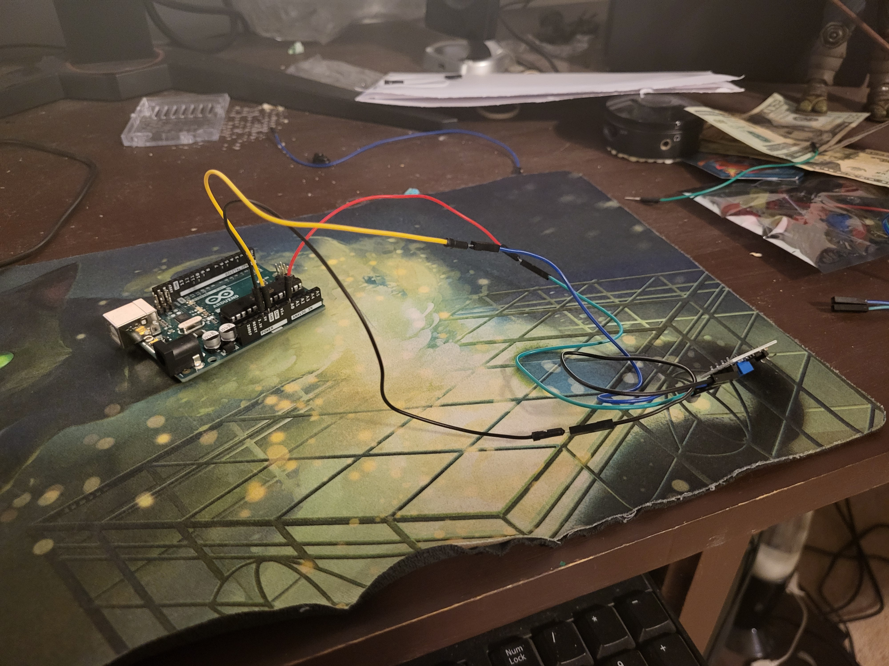
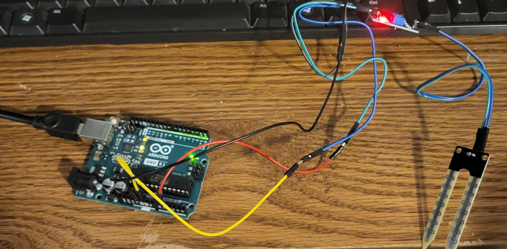

The project is relatively simple, here we will list out the steps in order to create your own project!
The materials you need are as follows:
And thats it!
The prices can vary, however, the project cost me this much around 61 dollars.
| Item | Cost |
|---|---|
| Arduino Uno Kit(Comes with wires) | $ 49.99 |
| Arduino Moisture Detector(Comes with wires) | $7.89 |
| Cups of Soil | $3.99 |
| Water | $0.00 |
Now lets get into how to make your project!
To do so, attach the female wires to the top two prongs of the probe

Upon establishing that connection, attach the other end of the female wire to the two prongs at the bottom of your sensor

Now it should look like this!

By connecting the female jumper wires to those slots, we'll be able to communicate the data the sensor gets to the arduino!
To connect, attach female jumper wires to the 4 prongs at the top of the sensor
The prongs are as follows, from left to right, The analog output, the digital output, the ground, and the vdd.
We wont be using the digital output this time.
Attach the male jumper wires to the Arduino board, you should attach the wires to the 5v, the GND, and any analog output

Next, attach the male jumper wire ends to the correct female jumper wire ends on the sensor

Every Arduino comes with a USB cable to attach into the computer
Upon attaching it, your set up should light up!

What we learn from this is how to physically set up this project, now right now it won't work without code. That being said, it is a representation of how we are interconnected with the internet of things. This project and moisture detector will constantly take in information about it's environment and will continue to do so. This data that it collects will be distributed to the computer as data and can be mapped out for us to see. It's a way to show how even something as natural as dirt can be represented in the digital space.